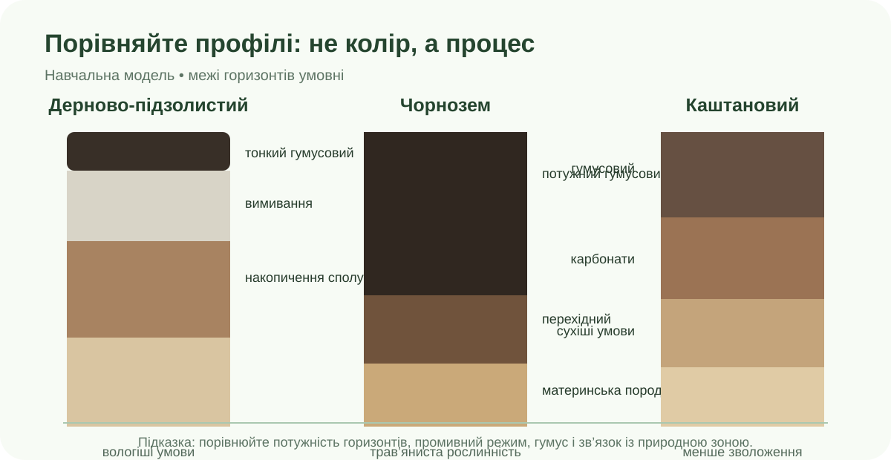

Що має бути готово за 35 хв

Схема навчальна: межі горизонтів умовні. Просторове поширення й фактичні характеристики перевіряйте за картами та джерелами.
Працюємо з даними, а не з декоративною «картою»
ННЦ «Інститут ґрунтознавства та агрохімії ім. О. Н. Соколовського» публікує карти чорноземів, органічного вуглецю, кислотності, засолення та ґрунтів України за WRB. Використайте щонайменше одну карту Інституту й одну додаткову карту/геопортал.
Якщо вбудована карта заблокована браузером, відкрийте її кнопкою вище. Крим — частина України; не використовуйте карти, що подають його інакше.
Дерново-підзолисті
Шукайте: Полісся, сильніший промивний режим, світлий елювіальний горизонт, порівняно менший запас гумусу.
Чорноземи
Шукайте: Лісостеп і Степ, потужний гумусовий горизонт, значну роль трав’янистої рослинності.
Каштанові
Шукайте: посушливіший південь степової зони, менше зволоження, коротший/світліший гумусовий горизонт, можливі процеси засолення.
Зведіть докази в одну модель
| Ознака | Дерново-підзолистий | Чорнозем | Каштановий |
|---|---|---|---|
| Поширення | |||
| Зволоження / водний режим | |||
| Рослинність, що впливає на формування | |||
| Гумусовий горизонт | |||
| Одна характерна властивість |
Доказовий висновок
Самоперевірка перед здачею
Сформуйте звіт
Рубрика — 10 балів
| Критерій | Бали |
|---|---|
| 3 типи ґрунтів і коректне поширення | 0–2 |
| Порівняння профілю та властивостей | 0–2 |
| Надійні карти/джерела й картографічні докази | 0–2 |
| Причинно-наслідкове пояснення | 0–2 |
| CER-висновок і охайність результату | 0–2 |